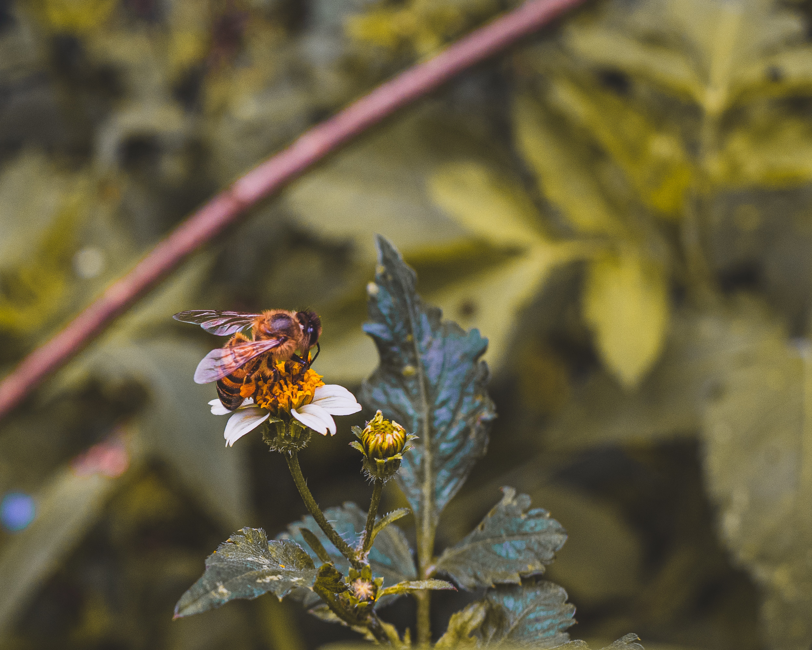

Natureza.
O grande pai criador de tudo isso que é magnifico, a cada lado que você olha você irá ver algo divino, mas olhar com um olhar diferente, um olhar onde tudo o que você vê enobrece os seus olhos, Deus na sua larga sabedoria colocou tudo no seu devido lugar, e com uma ordem inexplicável, tudo tem o seu tempo e tudo tem a sua ordem, uma semente tem um tempo para germinar, assim como o ser humano tem o seu tempo de vida, os animais todos nas suas cadeias alimentares, o mundo vive, por que o nosso grande Deus quer que continue, não somos capazes de mudar esse ciclo, mas somos capazes de mudar dentro de nós, cuidando mais daquilo que é magnifico e lindo que é a nossa natureza.
Natureza no sentido belo da vida, natureza no sentido da donde viemos, de onde os nossos ancestrais nos trouxeram, todos os seres humanos vieram a terra com missões diferentes, uns para ajudar, outros para atrapalhar, outros para humilhar, outros para amar, mas todos estão aqui pelo mesmo propósito, que é a vida, então devemos cuidar para que ela não se extingui num curto espaço de tempo, não é o nosso grande Deus que está fazendo isso connosco, mas sim nós mesmo, pois o ser humano, na corrida contra o tempo e contra a vida, só tem preocupação de inventar algo novo, para poder desfrutar do dinheiro que isso irá-lhe trazer, mas esquece que a humanidade não precisa viver com muito dinheiro, mas sim com amor e carinho.
O ser humano esquece para que veio a esse mundo, veio somente para dar continuidade pra natureza, veio para somente fazer parte desse mundo maravilhoso, não devemos esquecer que é a natureza que nos dá tudo o que precisamos, tente viver sem a abelha, tente viver sem a formiga, dois animais pequenos e que pra muitos não teriam muita importância, mas no mundo dos humanos fazem muita diferença, então cuide mais da natureza, viva, pois os animais e a natureza também precisa de você, cuide-se e se projete para um futuro melhor cuide daquilo que cuida de você todos os dias que é a NATUREZA.
Boa noite a todos.
~Mensagem recebida em: 31/07/2018
~Dr. Agnaldo Meirelles